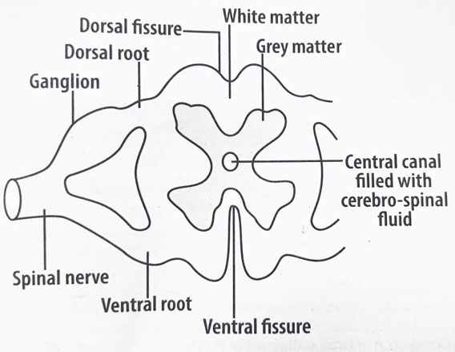

Diagram of the human brain
By the end of this lesson, you should be able to:
The brain is located within the skull or cranium, which protects it. The brain consists of two distinct regions: grey matter and white matter. The grey matter forms the surface of the brain, while the white matter is located beneath it. The grey matter contains cell bodies and dendrites, while the white matter contains axons.
Within the brain are four interconnecting chambers called ventricles. These ventricles are filled with cerebrospinal fluid (CSF), which provides cushioning and nourishment to the brain.
The brain is divided into three main parts: the forebrain, the midbrain, and the hindbrain.
Diagram of the human brain
The spinal cord is a long, thin, tubular structure that extends from the brainstem to the lumbar region of the vertebral column. It is protected by the vertebrae and contains neural tissue that transmits signals between the brain and the rest of the body.
In transverse section, the spinal cord consists of two identical halves fused together. The two halves enclose a small canal called spinal canal, which is filled with cerebrospinal fluid.
The spinal cord is also divided into an inner layer of grey matter, which contains cell bodies and dendrites, and an outer layer of white matter, which contains axons.
The spinal cord is responsible for transmitting nerve impulses between the brain and the rest of the body.

Diagram of the transverse section of the spinal cord
The brain and spinal cord are protected by several structures:
Cranial nerves emerge from the brain and primarily serve the head and neck region. Humans have 12 pairs of cranial nerves, each with specific functions such as sensory, motor, or mixed functions.
Pairs of spinal nerves emerge at intervals along the length of the spinal cord through an opening between two successive vertebrae. Humans have 31 pairs of spinal nerves.
Each spinal nerve divides into two roots before it joins the spinal cord. The dorsal root joins the dorsal part of the spinal cord and contains only sensory neurons. The cell bodies of these neurons aggregate in a small swelling known as dorsal root ganglion. The axon ends in the grey matter of the spinal cord.The ventral root is attached to the ventral part of the spinal cord. It contains only motor neurons. The cell bodies of these neurons lie in the grey matter of the spinal cord. The axon of these neurons leave the spinal cord and enter the ventral root of the spinal nerve.
The brain and spinal cord are the main components of the central nervous system. The brain is responsible for processing sensory information, coordinating movement, and regulating bodily functions, while the spinal cord serves as a communication pathway between the brain and the rest of the body. Both the brain and spinal cord are protected by structures such as the skull, vertebrae, meninges, and cerebrospinal fluid. Cranial nerves emerge from the brain and primarily serve the head and neck region, while spinal nerves emerge from the spinal cord and serve the rest of the body.
1. Describe the location and structure of the brain.
2. Draw a labelled diagram of the longitudinal section of the mammalian brain.
3. Describe the structure of the spinal cord.
4. What are the functions of the brain and spinal cord?
5. How are the brain and spinal cord protected?
6. What are the functions of cerebrospinal fluid?
7. What are cranial and spinal nerves? How do they differ?